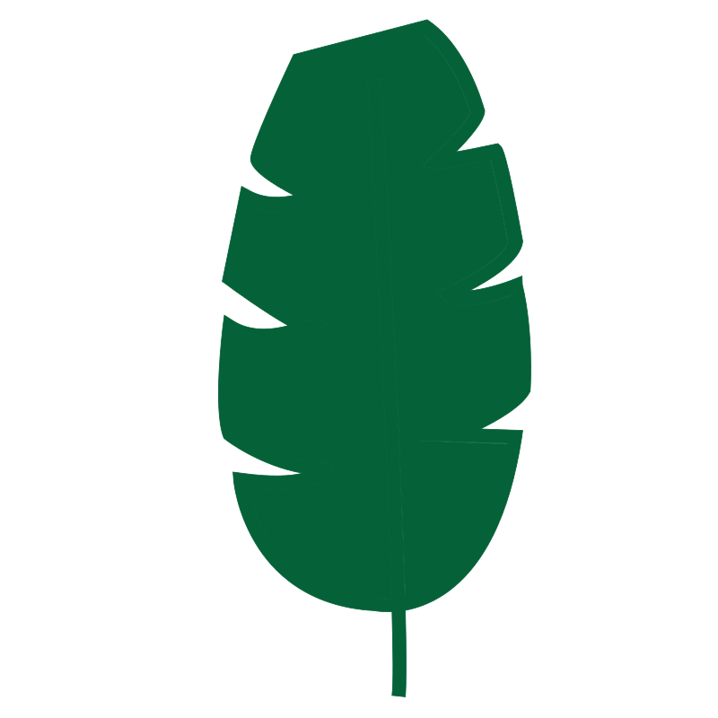
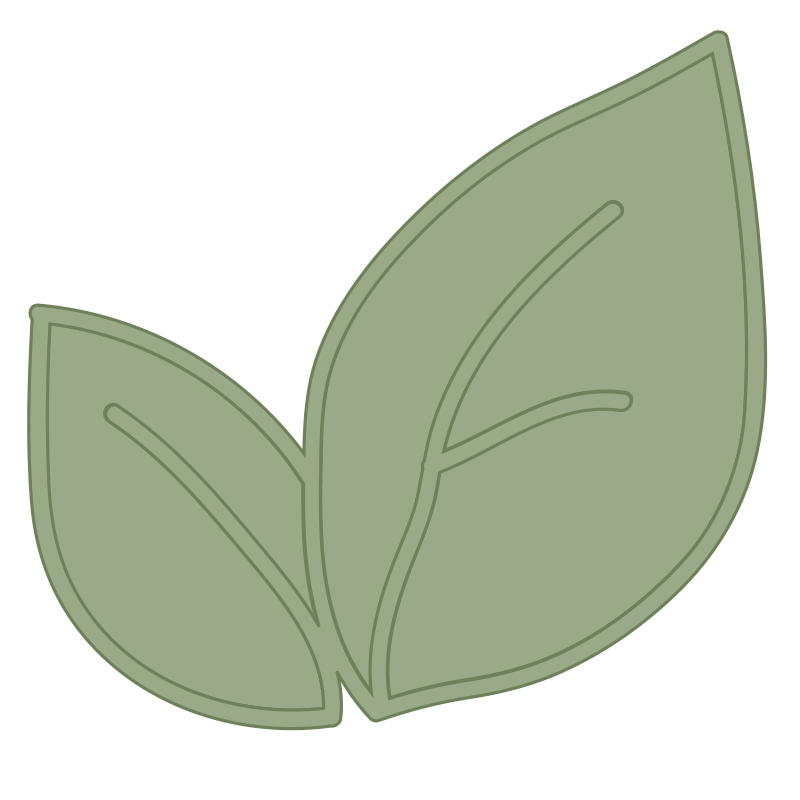
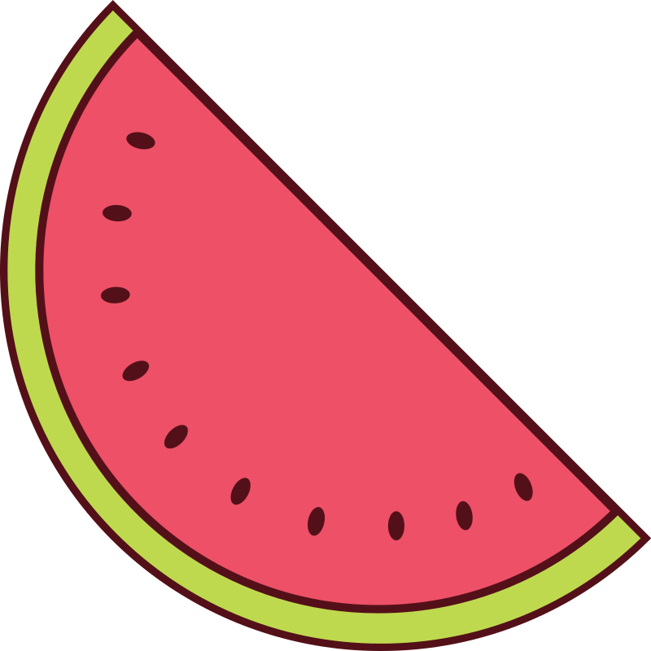
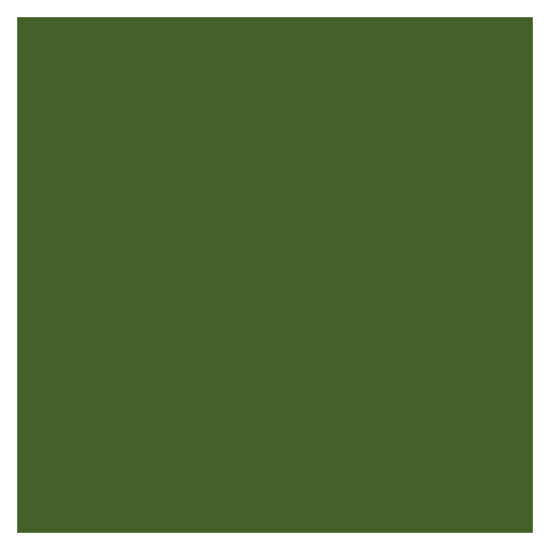

Caso tenha interesse em se tornar um amigo parceiro, faça login com o nome e endereço e o pix (caso houver) do seu estabelecimento
e contribua com a doação ou oferta de alimentos ainda dentro do prazo de validade.
No entanto
caso não tenha um estabelecimento, você pode se cadastrar da mesma maneira em
Dessa forma, alimentos que poderiam ser descartados ganham um novo destino e chegam a quem mais precisa!
Você também pode encontrar estabelecimentos parceiros da nossa rede para localizar ofertas e doações disponíveis e aproveitar essa iniciativa.
Ficou com alguma dúvida? Acesse a seção FAQ para consultar as perguntas frequentes ou retire sua dúvida com nosso assistente virtual.
Quer conhecer melhor nosso projeto? Visite a seção Sobre e descubra mais sobre nossa iniciativa, nossos objetivos e o impacto que buscamos gerar.